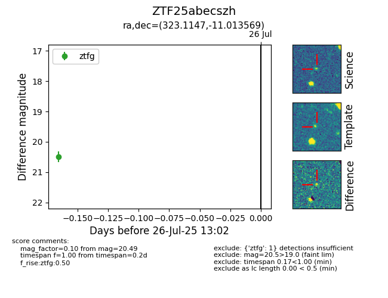

Target ZTF25abecszh at 2025-07-26 13:02, see:
FINK: fink-portal.org/ZTF25abecszh
Lasair: lasair-ztf.lsst.ac.uk/objects/ZTF25abecszh
ALeRCE: alerce.online/object/ZTF25abecszh
alt names
ZTF25abecszh (ztf,fink)
coordinates:
equatorial (ra, dec) = (323.1147,-11.01357)
galactic (l, b) = (41.9732,-40.66417)
photometry
last ztfg=20.49
1 ztfg detections
